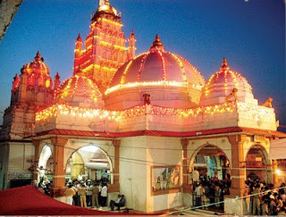

The city of Dakor is a mythological cauldron, and being there is like taking a drink from fabled waters.

Once a sleepy village, it used to crackle with a large number of khakhra (Butea monosperma) trees and was therefore often called a ‘Khakhariu gaam’. It is said that Rishi Dank had his ashram here, so the temple and the village are named after him as Dankpur or Dakor, and the Danknath Mahadev temple stands on the banks of Gomti Lake. As you approach from faraway you see the swaying flag on the tall and beautiful shikhar of the Ranchhodrai Dakor Temple inviting pilgrims. Chaitanya Mahaprabhu and Mirabai have both come here to pay homage to its idol.
On purnima (full moon) every month this temple town awakens to thousands of visitors in colorful festivity. Inspired by the revered legend of Bodana, many devotees even today come on foot from great distances. But remember, your Dakor adventure is complete only after tasting its lip-smacking gotas accompanied by tea or dahi (yogurt).
'Vijayanand Bodana', a Rajput of Dakor, walked every six months to Dwarka to worship Lord Krishna. He did this tirelessly and unfailingly until he was 72 years old, at which point the long journey became increasingly difficult for him. Feeling compassion for this faithful devotee, the idol of Krishna directed him in a dream to bring a bullock-cart on his ensuing visit to Dwarka. At midnight, the Krishna idol broke open all the doors of the Dwarka temple, awoke Bodana and told him to take him to Dakor. Near Bileshwar Mahadev on Dakor-Nadiad road, they rested for some time. Sri Krishna touched the branch of a Neem tree, and to this day that tree is said to have one sweet branch, though the rest of the branches are bitter.
In Dwarka, the angry Gugli brahmins, finding the idol of Krishna missing, chased Bodana and accidentally killed him. The Guglis were not ready to return to Dwarka without the Krishna idol. At last, Krishna asked Gangabai, the poor widow of Bodana, to give gold equivalent to the weight of the idol and ask the Guglis to return to Dwarka. The Guglis agreed, but all she possessed was a gold nose-ring. Miraculously, when weighed, the idol became as light as the nose-ring. The Guglis were disappointed but Krishna mercifully directed that they would find after six months an exact replica of the idol in Sevaradhan Vav at Dwarka. The impatient Guglis looked for the idol sometime earlier than they were told and as a result, found an idol which, though similar to the original one, was smaller. The original idol remained in Dakor. Even today on every purnima (full moon), pilgrims walk here from far away places to commemorate Bodana's devotion.
Hidimba Van and Rishi Dank
In the past, Kheda district was known as ‘Hidimba Van’. This is where the Mahabharata hero Bhimsen killed a demon and married Hidimba.
Rishi Dank had his hermitage in the fertile lands of Dakor, then called Dankpur after the name of the rishi. It is said that Shiva, pleased by the rishi's devotion, granted his wish and stayed in his hermitage in the form of a linga. At present the linga stands as Danknath Mahadev temple on the bank of the holy pond Gomti.
How to get there
By road: Dakor is in Thasra taluka of Kheda District, 43 km northeast of Anand, and 35 km east of Nadiad. Private and ST buses are available from Ahmedabad, Vadodara and Anand.
By rail: Nadiad and Anand are the nearest major railway stations. There is also a slow-train branch line terminus at Umreth, 7 km away.
By air: The nearest airport is in Vadodara- 78 km south, but the Ahmedabad airport- 90 km to the northwest, is not much further and has far more flights.